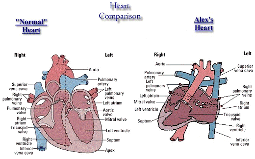

|
Alex's Medical Conditions
- Heart Conditions:
- Situs Ambiguus
- Situs Inversus L-loop
- Dextrocardia
- Unbalanced Atrioventricular Septal Defect (Atrial component only)
- Hypoplastic Left Ventricle
- Double Outlet Right Ventricle (with Atresia of Pulmonary Valve)
- Pulmonary Trunk Atresia
- Ventricular Septal Defects (Trabealor, Multiple)
In other words:
Mirror image heart on right side with a single valve leading to the pumping chambers. The left pumping chamber is smaller than the right with both great
arteries arising from the right and defects in both walls (between pumping and receiving chambers) and absence of the opening into the pulmonary artery.

- Other Congenital Birth Defects:
- Asplenia Syndrome (Missing or Insufficient Spleen)
- Non-Functioning Right Diaphragm
- Heterotaxy Syndrome (body develops forming two right sides)
- Non-Rotated Intestines
- Other Conditions Developed or Contracted After Birth:
- Necrotizing Enterocolitis (NEC)

Alex's Medical Procedures:
- Heart Surgery:
- Aorta-Pulmonary Shunt Operation, 8/9/96
- Surgery to add a 4mm Gortex shunt connecting systemic artery to the pulmonary artery to allow blood to flow to the lungs.
- Surgeons: Dr. Ross Ungerleider, Dr. James Jaggers
- Cardiologists: Dr. Bengur, Dr. Womack, Dr. Li, Dr. Herlong
- Glen Shunt Operation, 11/12/96
- Otherwise known as the "Hemi-Fontan", as it is the first half of the entire Fontan Procedure.
- Surgery would connect the Superior Vena Cava (SVC), which carries blood from the upper body, to the pulmonary arteries to
allow direct blood flow to the lungs.
- This physiology depends on the blood flowing on it's own as there is no way to make the blood flow without a Left Ventricle.
- Had been planned for Jan '97, however, other circumstances caused this to be moved to November '96.
- After making the connections, there was a problem with getting enough blood to flow properly to the lungs. Thus additional
surgery would be required.
- Surgeons: Dr. James Jaggers, Dr. Ross Ungerleider
- Cardiologists: Dr. Martin O'Laughlin, Dr. Li
- Glen Shunt Operation, 11/18/96
- Surgery to attempt to increase the size of the SVC and the pulmonary arteries to allow more blood flow.
- After again trying to achieve adequate blood flow, it still was not working properly.
- Surgeons: Dr. James Jaggers, Dr. Ross Ungerleider
- Cardiologists: Dr. Martin O'Laughlin
- Stent Placement, 11/22/96
- Surgery to place stents into the SVC and the PA's.
- Surgery performed in the operating room.
- Placed three stents:
- One 18mm stent in lower end of SVC at the PA
- Two 18mm stents in right PA, overlapped slightly.
- None placed in left PA, due to short length of left PA and what seemed to be adequate blood flow to the left already.
- After surgery was completed, again insufficient results.
- Surgeon: Dr. James Jaggers.
- Cardiologist: Dr. Martin O'Laughlin
- Stent Placement, 11/26/96
- Surgery to place stent into left PA only.
- Surgery performed in PICU directly.
- Placed one 18mm stent into left PA
- After surgery was completed, again insufficient results.
- This would be the final procedure to try to repair the problems.
- Upon this procedure not producing the results needed, the decision was made to remove Alex from ECMO and allow him to finally rest.
- Surgeon: Dr. James Jaggers
- Cardiologist: Dr. Martin O'Laughlin
- Fontan Procedure
- Proposed Final heart surgery. Second half of Fontan Operation.
- Was to be planned for 18 months to 3 years of age.
- Other Surgeries or Procedures:
- Placate non-functioning right diaphram. 11/12/96
- Surgery to "tack down" the right diaphram as it was not moving properly.
- Was performed during first Glenn Shunt Surgery.
- Surgeon: Dr. James Jaggers.
- "Tack down" Intestines due to Non-Rotation
|